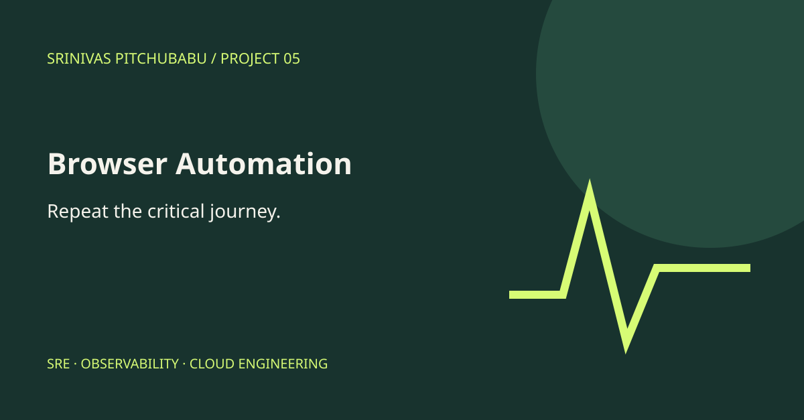

Browser Automation Showcase / Public edition
Prove the small journey works.
Exercise a fictional storefront and run visible browser smoke checks against its cart and checkout behavior.
Browser testingAssertionsUser journeys

Explore the implementation
A small system you can inspect.
Quantity and shipping controls
Checkout validation
Four browser smoke checks
Try this.
Run the checks, then manually add products and choose shipping. Confirm that checkout requires the demo agreement.
The on-page runner uses browser JavaScript and DOM assertions; it is not a hosted Playwright service. It places no orders, processes no payments, and makes no remote requests. A separate Playwright test file is included for local automation.